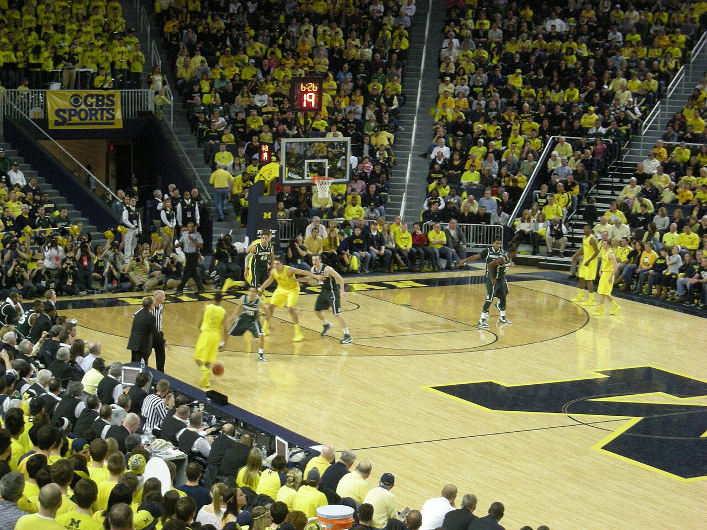

Welcome to College Basketball Rivalries Home Page!
College Basketball Rivalries are home of the bragging rights between two competitive college/university teams on & off the court. There're a bunch of lessons and links that you can discover and learn about rivalry games in College Basketball. It includes heated rivalry for teams & fanbases, great moments, legends, and much more.
Images / Videos
There're some photos and videos that you can view and illustrate & analyze it. For instance, you can see the 3 photo examples describe that rival college/university teams are competing to each other. Besides photos, there're 2 video examples that can easily you to understand.

